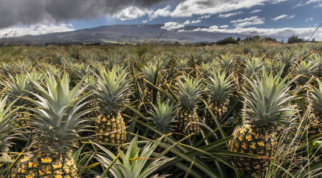

11/5/2022
Tác giả: Anonymous
#Tin AKING VILLAGE
AKING VILLAGE NÂNG VỐN ĐẦU TƯ CHO DỰ ÁN TẠI PHÚ YÊN LÊN 42 TRIỆU USD
I interviewed three realtors to list our property we ultimately choose Mattison Ference with Hayden outdoors. This property was something we took great pride in as we basically built it from scratch and was only going to trust the best real estate agent to sell it for us. Mattison reminded me of our own daughters and insisted that I was going to let her be the boss and trust her she was only going to do a professional job. Mattison proved she was one of best! Paying close attention to preparation, pictures, showings, paperwork, including all the details for a smooth closing.
Three cheers to Mattison, the property was sold in just a few short days. Part of our great many memories of our lake house include Mattison.” ’ve been procrastinating on writing this review because I truly don’t know where to begin and end. Our experience with Cody was beyond comparison. We were blessed from the moment we first interacted with Hayden Outdoors and Cody Renner. He was top notch from beginning to end. Actually, I don’t think we’ve ended, he still is scheduled to meet us this Saturday with raspberries and hopefully some time to celebrate the good work that he did and the phenomenal property we now own. Cody was beyond the normal experience you’d expect to have in the real estate business. Of course he was well organized, responsive, knowledgeable, and engaging. But outside of what you’d expect from any professional, he was incredibly thoughtful, caring, forward thinking, energetic, and innovative. He was able to share our vision for the property and even expand upon our ideas. He is incredibly bright, currently a student studying civil engineering. He was able to actively engage in conversations between us and the engineer we had surveying/assessing any needs related to the river flow/bank erosion control on the property.


The team is composed of brokers and agents with experience and knowledge in their markets and an affinity to “Do what they say they will”. Hayden Outdoors is about honesty and integrity with customers and a rich sense of land stewardship. Our agents know land because they are what the land has made them. We understand land, water, minerals and what is necessary to maximize value for our clients.
Hayden Outdoors is built on the relationships between our clients and our brokers, as well as an in-depth knowledge of the farm, ranch and recreational real estate market. Our brokers are passionate about the outdoors and are proud to work and play in the outdoor setting we all love so much. Our buyers and sellers know that the fine properties we represent are the kind of properties we would call our very own. Because of these traits we have been successful since 1976 and have continued to be named one of America’s Best Land Brokerages. Whether it’s claiming that prized elk in Colorado, the smell of fresh cut hay in Kansas, hearing the rise of that rooster pheasant in Nebraska, or relaxing by a pristine mountain stream in Wyoming.